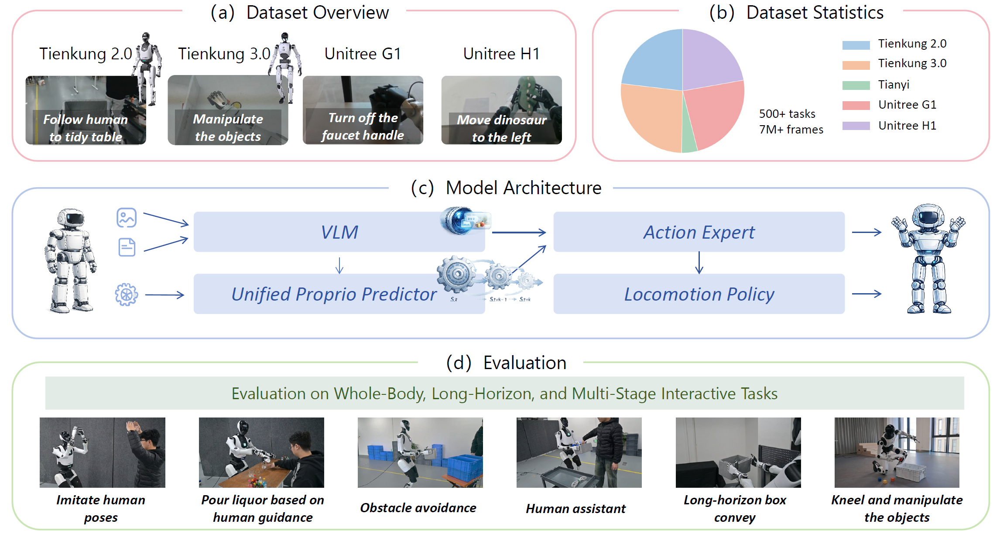
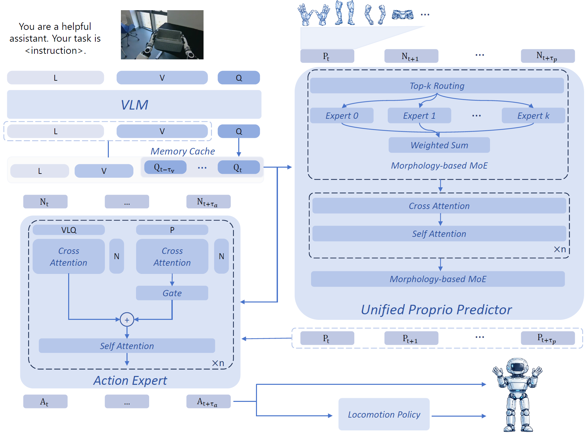

Overview.
Humanoid control requires jointly reasoning about high-level task semantics and stability-critical internal dynamics. However, existing vision-language-action (VLA) models typically condition action generation on instantaneous observations through a single attention pathway, leading to temporally inconsistent and unstable behaviors, especially under action chunking and embodiment shift.
We propose HEX, a humanoid-aligned part-based state representation with a lightweight mixture-of-experts state prediction module that decouples embodiment-specific kinematics from shared temporal dynamics, enabling effective cross-embodiment pretraining.
Built on this design, HEX achieves robust and transferable humanoid control across diverse embodiments and real-world tasks.

Schematic of HEX framework.
HEX is a humanoid-aligned VLA framework that introduces retrospective execution context and prospective dynamic conditioning for robust cross-embodiment control. HEX employs a dual cross-attention action head that separately attends to visual-semantic representations from a vision–language model and short-horizon dynamic cues derived from future state prediction. A residual gating mechanism adaptively fuses the two branches, allowing the policy to balance semantic intent and dynamic feasibility based on the robot's condition, while a subsequent self-attention layer enforces temporal coherence across the action sequence.
To enable cross-embodiment transfer, HEX represents humanoid states using part-based abstractions with a lightweight mixture-of-experts for embodiment alignment and pretraining across heterogeneous platforms.